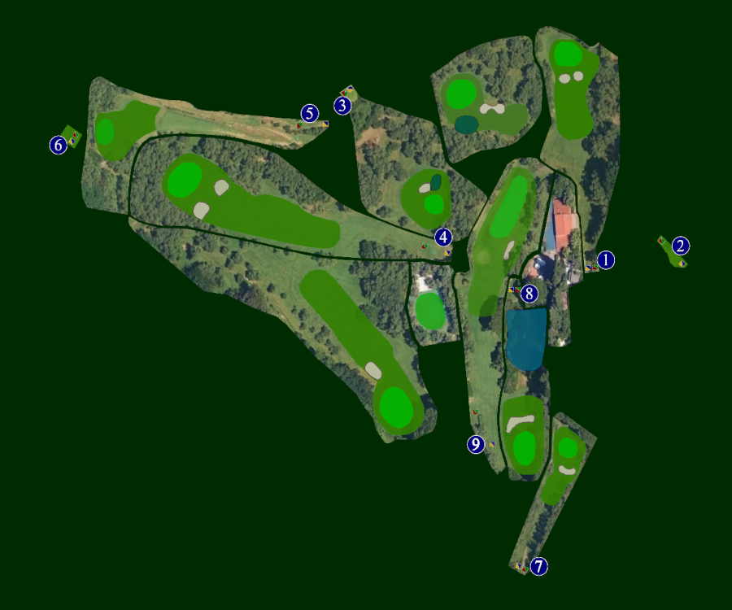

🏌️ Benvenuto al Circolo Golf
La tua posizione in tempo reale e distanze dalle buche 5 e 7
⚠️ Sei fuori dalla mappa (posizione non visibile)

📍 Distanza dalla buca 5: -- m
📍 Distanza dalla buca 7: -- m
Nota: il GPS funziona solo su dispositivi con sensore e permessi attivi.